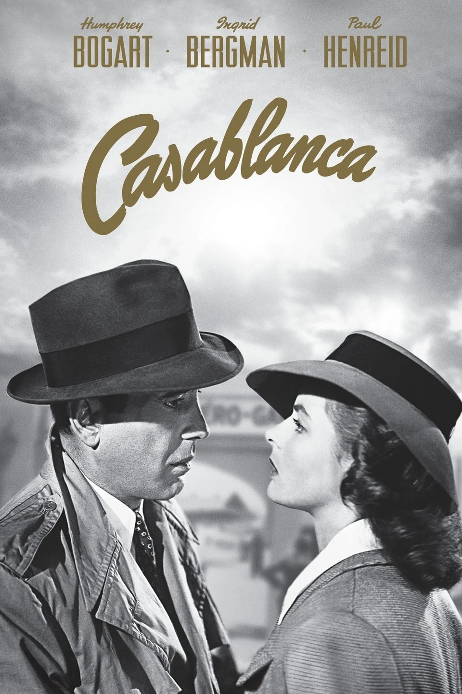

I enjoy the outdoors so I like to hike, kayak and run and I plan to get into mountain bking in the summer.I also like working out and watching movies. Some of my favorite movies are Blade Runner 2049, Casablanca, and the Lord of the Rings Trilogy. My favorite color is blue and I'm borderline addicted to eating sweets but i'm trying to cut them out. Lastly, I don't play games as much as I used to but some of my all time favorites were Halo 3, ODST, Reach, Warframe, Destyiny/Destiny 2, Hearts Of Iron 4, and Death Stranding.
Inspirational Video: None of this matters